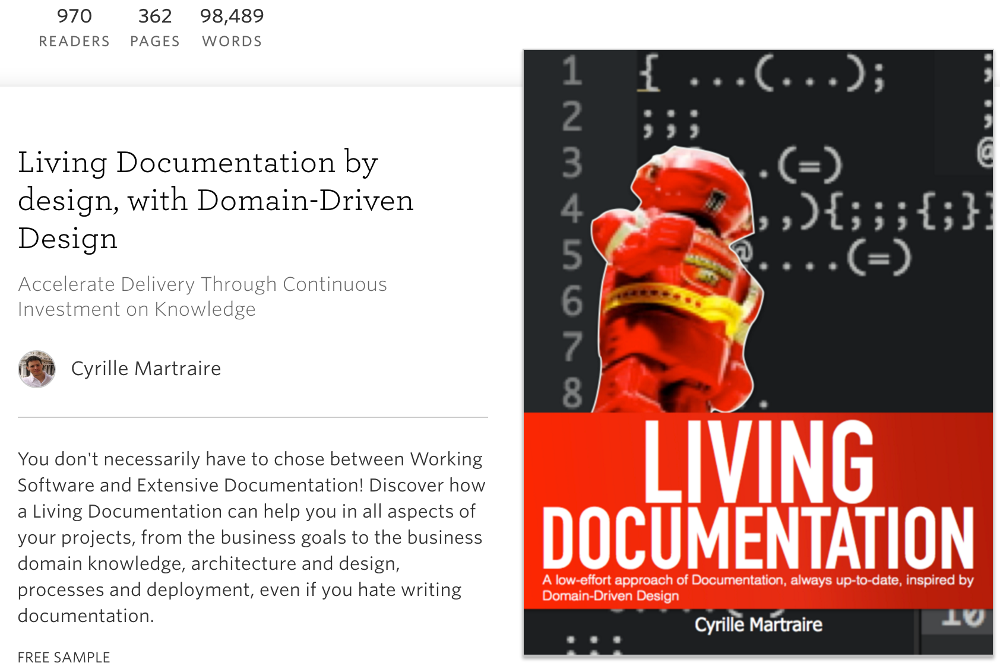
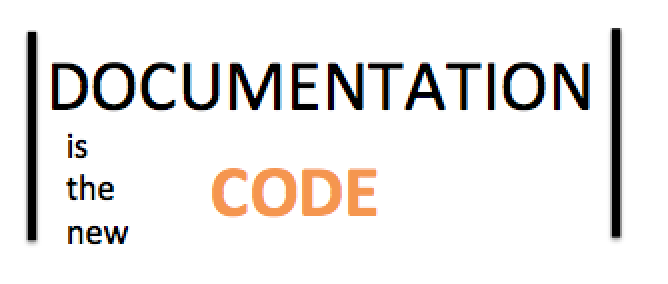
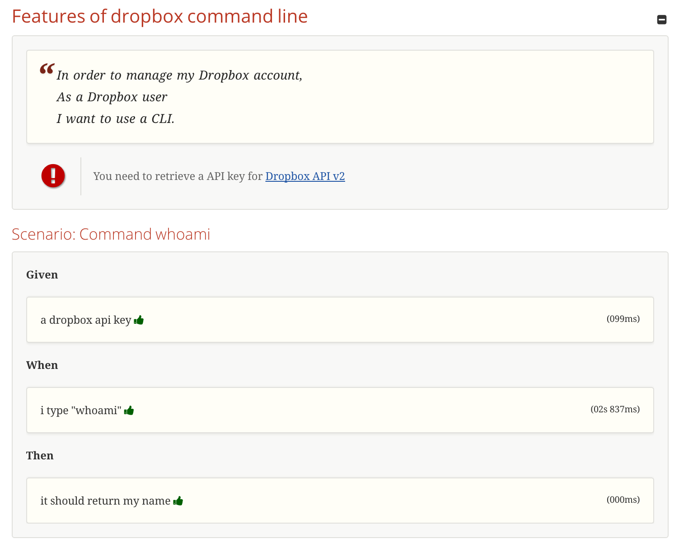
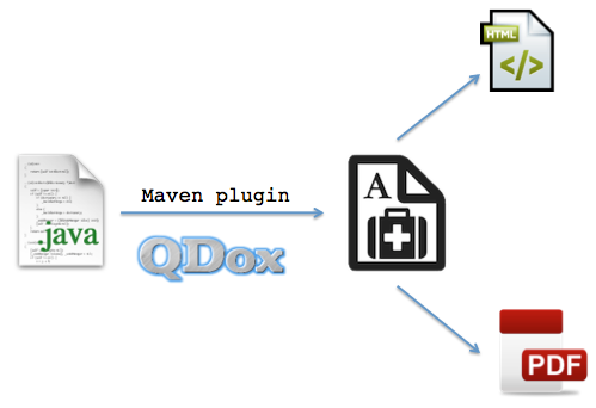
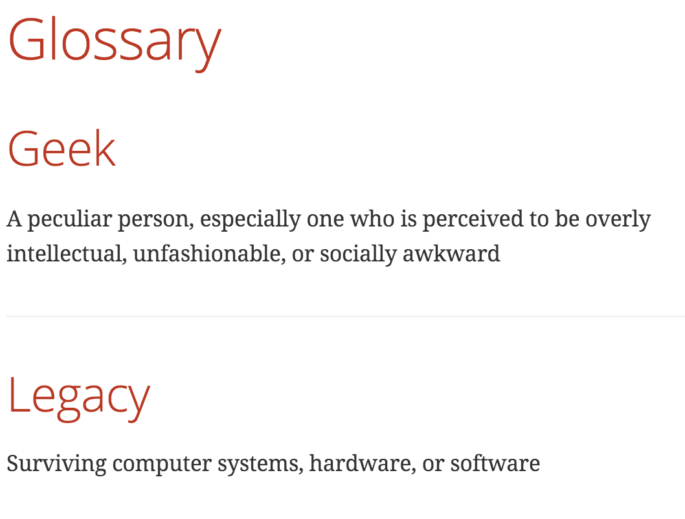
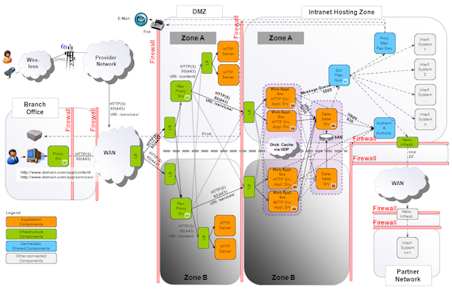
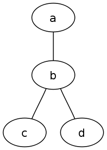
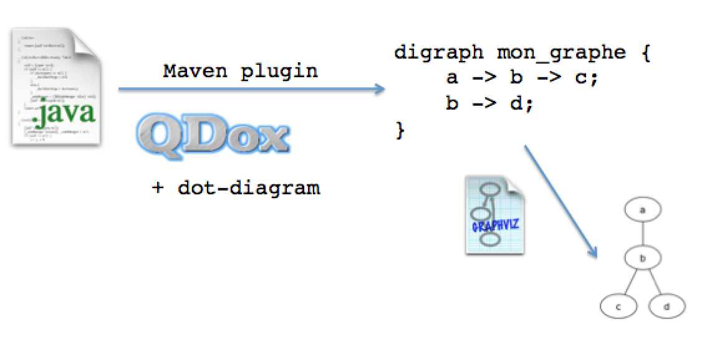
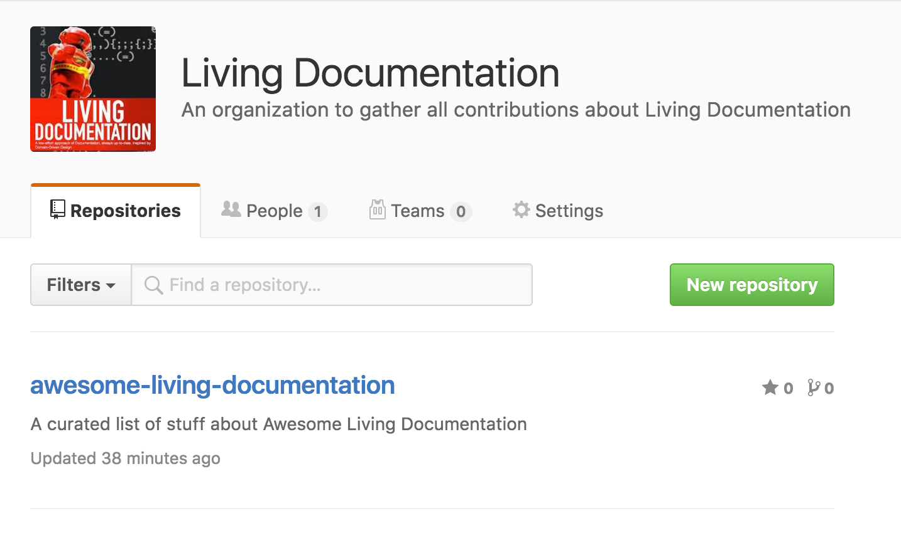

Toolbox for a living doc
Me
@binout https://github.com/binout

Il y un an …
Living Documentation : vous allez aimer la documentation !Cyril Martraire, BDX/IO 2015
Et aussi le livre

Documentation 2.0

- La documentation est avec le code
- La documentation se build avec le code
- La documentation se teste comme le code
Mais…
- La documentation doit rester vivante !
- La maintenance reste l’enjeu majeur.
Ma boîte à outils
Documentation Technique
README-
- description d’un projet, du contexte
- outils de build
TUTORIAL-
- getting started
- examples de codes
API REST-
- documentation des ressources
Asciidoc et Asciidoctor !
- Asciidoc
-
langage de balisage (aka Markdown mais en mieux )
- Asciidoctor
-
toolchain pour convertir l’asciidoc en html, pdf, epub, …
Pourquoi ?
- on se concentre plus sur le fond que sur la forme
- c’est du texte, donc un éditeur classique suffit
- on peut gérer l’historique avec un SCM
- on a un peu l’impression de coder
Macro include pour du code
== Code examples
[source,java]
---
include:{basedir}/src/main/java/io/github/binout/Geek.java[]
---La documentation présente le code à jour et sans erreur !
Macro include pour un morceau code
== Code examples
[source,java]
---
include:{basedir}/src/main/java/io/github/binout/Geek.java[tags=hype]
---public class Geek {
String getName();
//tag::hype[]
Hype computeHype(int age, String language)
//end::hype[]
}Macro include pour un fichier de test
== Body
[source,asciidoc]
---
include:{basedir}/src/test/resources/io/github/binout/geek.json[]
---geek.json
{
"name" : "binout",
"language" : "java",
"hype" : 100
}Documentation Métier
BDD (Behaviour Driven Design)
- Utilisation du langage naturel et du domaine métier pour décrire les spécifications
- Les spécifications permettent de créer des tests automatisés
Cucumber

cucumber-java en 4 temps
-
Ajouter les dépendances
info.cukes:cucumber-javaetinfo.cukes:cucumber-junit -
Un fichier
.featureenGherkin - Une classe Java faisant le bridge entre le fichier et les assertions de test
- Une classe Java pour ajouter le runner Cucumber
Fichier feature
Syntaxe gherkin
Feature: Features of dropbox command line
Scenario: Command whoami
Given a dropbox api key
When i type "whoami"
Then it should return my name
Scenario: Command ls
Given a dropbox api key
When i type "ls"
Then it should return a list of pathFichier Steps
@Given("^a dropbox api key$")
public void a_dropbox_api_key() throws Throwable {
assertThat(Dropbox.apiKey()).isNotNull();
}
@When("i type \"([^\"]*)\"")
public void i_type_a_command(String command) throws Throwable {
this.result = executeCommand(command);
}
@Then("^it should return my name$")
public void it_should_return_my_name() throws Throwable {
assertThat(result).contains("Benoît Prioux");
}
@Then("^it should return a list of path$")
public void it_should_return_a_list_of_path() throws Throwable {
Arrays.stream(result.split(System.lineSeparator())).forEach(p -> assertThat(p).startsWith("/"));
}
}Fichier Runner
package io.github.binout.dropbox.bdd;
import cucumber.api.CucumberOptions;
import cucumber.api.junit.Cucumber;
import org.junit.runner.RunWith;
@RunWith(Cucumber.class)
@CucumberOptions(strict=true, plugin = {"json:target/cucumber.json"} )
public class DropboxCliTest {
}Cukedoctor - Living Documentation
- Permet de générer de (jolis) rapports en HTML ou en PDF

Autre exemple de doc métier
- Glossaire
-
- vocabulaire métier de l’application
- est utilisé par les experts métier
On doit retrouver le même vocabulaire dans le code !
Ajouter la documentation dans le code
Annotation marqueur
@Glossary
/*
A peculiar person, especially one who is perceived to be overly intellectual, unfashionable, or socially awkward
*/
public class Geek {
....
}Génération à partir du code

Un joli glossaire à chaque build

Documentation Architecture
L’architecte, c’est celui qui fait les diagrammes !

Syntaxe dot

digraph mon_graphe {
a -> b -> c;
b -> d;
}Génération depuis le code

Visualisation du graphe
- GraphViz
- Plantuml viewer
Retour d’expérience
A utiliser pour représenter son domaine métier
- il existe un plugin maven pour ça
Peut permettre de représenter les choix de design
- mon domaine ne doit pas dépendre de mon infrastructure
- Peut aussi détecter des erreurs de design !
Organisation Github !

You’re welcome !
Un dernier conseil avant de finir
La meilleure documentation, c’est celle qu’on écrit pas !
Avant d’écrire une documentation (et de la rendre vivante), des questions à se poser :
- pour quel public ?
- pour quel objectif ?
- pour combien de temps ?
/